2013天津全国五子棋公开赛棋评---汪清清
#1 2013天津全国五子棋公开赛棋评---汪清清 作者：梧桐风 发表时间：2013-6-25 23:13:48
我打了这六个打点，没有打4左下的那个打点，因为我想2右右的那个打点不常见，她可能会因为没叫过给我留别的打打，其它都是黑大优有的必胜，想到这个我就很满意自己的策略！！O(∩_∩)O哈哈~
可是、、她给留了这个不常见的。。活了三。。我瞬间有点忐忑。。因为这个我也不熟悉！！！10活三，我在那想挡那边，我突然发现挡哪边好像都死了，被抓三三。。瞬间石化了我。。。再仔细一算。。发现我是自己吓自己。。因为我把白棋连走了两步。。 嗯 后面就这样我赢了。
太久了对局的顺序记得可能有点问题，写错了的对手可别怪我呀
 我记性不好。。
我记性不好。。 第二盘 对韩悦 我开金星四打 还是五打 记不太清了。。她没有交换
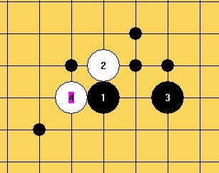
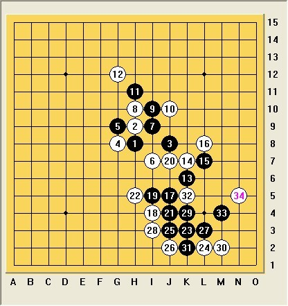她给我留了我本想给她留的打点
 。。其实，我真没想那个那个怎么走好，我只能选择硬着头皮攻！！这个局面我跟Aivo下过。。当时，我没攻几手很快崩盘了。。所以我心里很紧张，很怕自己攻崩，而且对手防守还是不错的，感觉14弱了，直接盖在3右边干净些，22.黑棋VCT了。
。。其实，我真没想那个那个怎么走好，我只能选择硬着头皮攻！！这个局面我跟Aivo下过。。当时，我没攻几手很快崩盘了。。所以我心里很紧张，很怕自己攻崩，而且对手防守还是不错的，感觉14弱了，直接盖在3右边干净些，22.黑棋VCT了。第三盘 对简永璇 她开恒星四打，我交换了，交换后我又后悔了。。干嘛不直接拿白慢慢下呢 反正四打平衡的呀，结果我自己还打出了个必败！！

然后她活三团角。。我算了很多。。
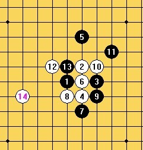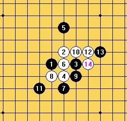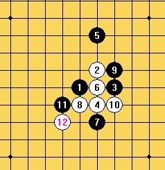
算完这些，我确信我打了必败。。可是 我真的好想在哪里见过这个打点啊。。也可能我记错了。。反正我是是死了！！我当然不会那么轻易放弃啊！！ 我选了一路我认为难的一路分子给对手攻，可是她好像并没有想太多，她走的很快。
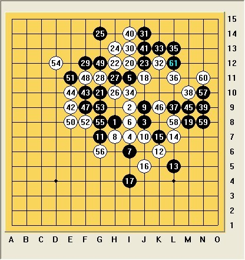
后面她时间也不多了，52她犯错了，我交换完后，终于可以攻一手了
 然后我跳了个三。。 这局真的是太惊险了。。 我需要好好反思反思！！！提醒大家以后下棋不到最后一刻，都不要放松！！
然后我跳了个三。。 这局真的是太惊险了。。 我需要好好反思反思！！！提醒大家以后下棋不到最后一刻，都不要放松！！第四盘 对王烨林 我开局 晚上纠结了很久 想开云月还是什么，后来李一大师出现了！！好感动~~~ 他简单的问了下我当前的情况，然后就很快投入到帮我准备当中，，真的超迅速~~ 他建议我开花月，帮我分析了很多变化形势，虽然最后都没有用上，可是，我还是学到了不少！！超级感谢他！！ 早上，少帅过来问我准备开什么，我说花月，他很反对！！
先写到这。。要去医院挂水。。回来接着写！！
我又来啦~~~~~~~~
比赛前一天晚上看了这个变化，当时只是瞟了一眼想如果10挡外面怎么办，结果黑必胜了。。。然后就没管它了，走到第九手，我有那么一瞬间幻想她会不会挡在外面。。结果。。结果。。她真的挡了外面！！然后我就活了个三。。。然后。。然后。。嗯 ，杀了。 下完去她房间摆棋，才发现她电脑里正好也摆着这个局面。。我问她什么情况，她说她早上才看了这变化，不过是通残月的那路说黑有盘端杀不掉，她准备放我攻来着。这个又得感谢李一大师了，他前一晚提醒我一定要打在和天元一条线的5。不过，后来他们说通残月的那路这个变化也必胜了。 这盘她策略是没有问题的， 只能说是她的谱坑了她吧~~
第五盘 对刘恂 我开局 以我对她的了解！！开浦月五打 我想那么多打点，她肯定不会打，肯定不交换，然后我就黑大优啦
 结果她交换了！！！ 好吧。。我还是不了解她 可是！！可是！！五个打点这家伙给我打出了两必败！！！ 姐一脸的鄙视啊~~~ 她还在那优哉游哉的拨弄着秀发~~
结果她交换了！！！ 好吧。。我还是不了解她 可是！！可是！！五个打点这家伙给我打出了两必败！！！ 姐一脸的鄙视啊~~~ 她还在那优哉游哉的拨弄着秀发~~
我把三个必胜点拿掉，留两必败开始长考~~~~~~~~~~~~她这两个打点我还真没见过。。可是我确定都是必败！！长考了差不多快半个小时吧 这期间她东张西望，还对我奸笑，以为自己下出了神之一手在那得意~~ 当然姐没空理她~~
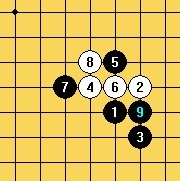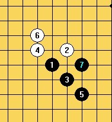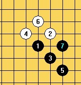
我算了第一个5，不管怎么走9都有个唯一强防，后面虽然白也很优可是我始终没算到最后的杀，所以一直不敢下手！！第二个5我当时算了白棋很多攻，可是 黑棋都可以这样牵制白棋，我更不敢下了，因为这东西不是你死就是我死啊！ 这也暴露了我想棋不够心细性格急躁的缺点！！因为事实上6走4上面是简单必胜了的，只是自己当时脑子里浮现了黑棋一片就懒得去算了。。最后我还是选择了第一个变化，现在看来相对难胜的变化。
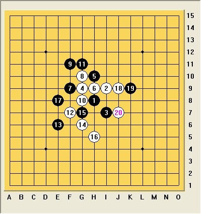
结果她9挡了外面。。然后。。她死了。。 问题是下完姐姐我还要20多分钟！！她还有62分钟！！！下完回房间，刚好收到刘恂妈妈短信，说看到刘恂签名好像不太开心让我安慰下她，我回：阿姨放心，她好的很呢！！正优哉游哉的打游戏看甄嬛呢：） 阿姨回：看她回来我好好说她! 我回：嗯 得狠狠的打！ 哇哈哈~~ 后面的 大家就问刘MM吧~~ （这个五确实必胜了）
第六盘 对李菲 她开局 开云月4打， 这个是我之前本来也想开的开局，然后我就交换了。。其实我后来后悔交换了
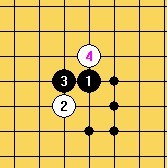
我交换后，我就想她会不会给我下这个4给我留我最不想要的五。。结果预感全中。。
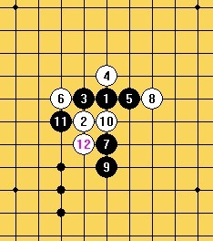
其实这个局面，我问过澳门仔这个好下吗，怎么攻啊。。他说好下随便攻！好吧 然后看他说的那么轻松我也就没再多看，因为我本来是我打算开让对手交换的，我也没打算给对手留这个打点，所以也没想太多，可是 他说的随便攻差点害死我啦 其实也怪我自己太笨蛋！！这三个点我算了差不多快20十分钟吧，都算到白棋可以在右边做棋跟我对攻，而且又是对手开局，我也怕自己稍有不慎会死的~~我纠结了很久很久多不敢下手！！事实上又暴露了我算棋毛躁不仔细的大缺点了！！！其实11的下下的那个点是不错的点，可是我偏偏没有静下心来去细算，哎 还是棋力太弱啊！！ 导致了我实战下的臭棋！！！差点了把我小心脏都吓出来了~~~
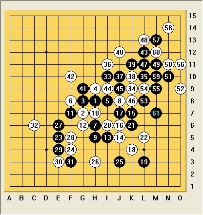
感觉对手防守太过扎实。。21是被逼无奈，其实这时对手就可以直接不管我在上面攻了，25也是吓唬人的。。对手可以同样不理，下出25我真的都不敢抬头看对手。。生怕她不理我走了~ 还好她还是对我不太放心没有离去~~ 走到31我还有十几分钟。。对手至少还要三四十分钟吧。。虽然我形势还是大不妙！！可是相对刚刚我已经非常心满意足啦！！也许是时间的压力激发了我把！后面的棋我不但没有乱了阵脚反而异常镇定冷静！！而且都算的很快感觉看得很透彻，走到47的时候我并没有算清楚48挡反方向怎么杀，可是当时也管不了那么多了就想先攻完这边再说，结果她挡了上面，然后我活三就VCF了。好吧 这盘前30多手走的真的是太烂了。。。。大家闭眼吧，勉强欣赏欣赏后面的吧
 嘎嘎~~也是惊险的一盘！！捡来的啊~~~~~~~~
嘎嘎~~也是惊险的一盘！！捡来的啊~~~~~~~~
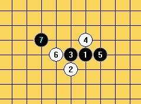
差点忘记这个了，多亏某某提醒~~ 我本来是想走这个7的，多亏澳门仔提醒！！他说这个是白优！！所以我放弃了！！ 事实证明这个是黑大优~~~ 我想杀了他可以吗
最后一盘 对吴志琴 琴琴开局 银月四打 我换！
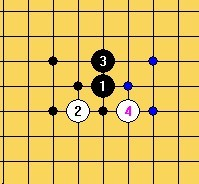
哎！怎么说呢 我发现我这次比赛预感真的是太准了！！我打完打点就想她会不会考我1下面的那个打点啊。。。
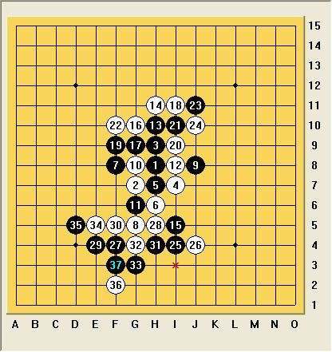
果然！！！哎 怕啥来啥！！ 我当然不会啦 果断变招！！！ 然后前面交换完毕，在下面无压力了的开攻了，对手没防出强防，然后就没了。。 这盘我还算满意~懂得控制自己的冲动，安心当成稍优势局慢慢下！！懂得转变不小的进步喔~~O(∩_∩)O哈哈~
哇哈哈~~ 到这里就结束啦！！ 是不是写的好棒呀~~
O(∩_∩)O哈哈~ 大家开心↖(^ω^)↗ 继续加油~~ 

［ 小丸.net 于 2013-6-25 23:25:24 时奖励此帖[金币加 100 威望加1］
［ 踵酃 于 2013-6-25 23:31:02 时花20金币送鲜花一朵］
［ 踵酃 于 2013-6-25 23:31:02 时花20金币送鲜花一朵］
［ 南京小飞机 于 2013-6-26 0:53:27 时花20金币送鲜花一朵］
［ 南京小飞机 于 2013-6-26 0:53:27 时花20金币送鲜花一朵］
［ 南京小飞机 于 2013-6-26 0:53:27 时花20金币送鲜花一朵］
［ 南京小飞机 于 2013-6-26 0:53:27 时花20金币送鲜花一朵］
［ 南京小飞机 于 2013-6-26 0:53:27 时花20金币送鲜花一朵］
［ 南京小飞机 于 2013-6-26 0:53:27 时花20金币送鲜花一朵］
［ 南京小飞机 于 2013-6-26 0:53:27 时花20金币送鲜花一朵］
［ 南京小飞机 于 2013-6-26 0:53:27 时花20金币送鲜花一朵］
［ 南京小飞机 于 2013-6-26 0:53:27 时花20金币送鲜花一朵］
［ 暮雨迟 于 2013-6-26 6:25:15 时花20金币送鲜花一朵］
［ 天籁之琴 于 2013-6-26 9:59:10 时花20金币送鲜花一朵］
［ 天籁之琴 于 2013-6-26 9:59:10 时花20金币送鲜花一朵］
［ 天籁之琴 于 2013-6-26 9:59:10 时花20金币送鲜花一朵］
［ 天籁之琴 于 2013-6-26 9:59:10 时花20金币送鲜花一朵］
［ 天籁之琴 于 2013-6-26 9:59:10 时花20金币送鲜花一朵］
［ 冰雪笑醉 于 2013-6-26 11:29:16 时花20金币送鲜花一朵］
［ 伤情路 于 2013-6-26 14:31:29 时花20金币送鲜花一朵］
［ 伤情路 于 2013-6-26 14:31:29 时花20金币送鲜花一朵］
［ 伤情路 于 2013-6-26 14:31:29 时花20金币送鲜花一朵］
［ 伤情路 于 2013-6-26 14:31:29 时花20金币送鲜花一朵］
［ 伤情路 于 2013-6-26 14:31:29 时花20金币送鲜花一朵］
［ 伤情路 于 2013-6-26 14:31:29 时花20金币送鲜花一朵］
［ 伤情路 于 2013-6-26 14:31:29 时花20金币送鲜花一朵］
［ 伤情路 于 2013-6-26 14:31:29 时花20金币送鲜花一朵］
［ 伤情路 于 2013-6-26 14:31:29 时花20金币送鲜花一朵］
［ 伤情路 于 2013-6-26 14:31:29 时花20金币送鲜花一朵］
［ 圊籽同学于 2013-7-15 10:51:35 时花20金币送鲜花一朵］
#2 Re:2013天津全国五子棋公开赛棋评---汪清清 作者：梧桐风 发表时间：2013-6-25 23:14:37
 总算上传排版好了
总算上传排版好了
#3 Re:2013天津全国五子棋公开赛棋评---汪清清 作者：厦门小天 发表时间：2013-6-25 23:53:47
…… 一开始没看清作者，还以为梧桐乔装打扮参加女子组了，MM一路碰到尾。#4 Re:2013天津全国五子棋公开赛棋评---汪清清 作者：一期一会 发表时间：2013-6-25 23:54:19
我想的10这个点，后来我也没找出杀，感觉可下就寻求变招了个，可惜这次没能和你好好拼一局~~
ps和少帅一个队伍让我感觉很无语- -
清清世锦赛加油！
#5 Re:厦门小天【==Re:2013天津全国五子棋公开赛棋评---汪清清==】 作者：梧桐风 发表时间：2013-6-25 23:55:37
引用：
原文由 厦门小天 发表于 2013-6-25 23:53:47 :
…… 一开始没看清作者，还以为梧桐乔装打扮参加女子组了，MM一路碰到尾。
#6 Re:2013天津全国五子棋公开赛棋评---汪清清 作者：屏蔽 发表时间：2013-6-25 23:55:52
我来露个脸。#7 Re:2013天津全国五子棋公开赛棋评---汪清清 作者：踵酃 发表时间：2013-6-25 23:58:52
挺有趣的，策略应用的准确率跟平常的经验跟锻炼分不开地。#8 Re:2013天津全国五子棋公开赛棋评---汪清清 作者：小丸.net 发表时间：2013-6-26 0:34:04
少帅啊，一伙的你也卖啊。。。。。#9 Re:2013天津全国五子棋公开赛棋评---汪清清 作者：南京小飞机 发表时间：2013-6-26 0:53:58
贴图不易……鲜花伺候……#10 Re:2013天津全国五子棋公开赛棋评---汪清清 作者：屏蔽 发表时间：2013-6-26 0:57:50
我怎么理解的是少帅想帮狮子呢#11 Re:2013天津全国五子棋公开赛棋评---汪清清 作者：釣鱼岛岛主 发表时间：2013-6-26 8:50:25
10楼不送花 我就纳闷了#12 Re:2013天津全国五子棋公开赛棋评---汪清清 作者：没事摆石子玩 发表时间：2013-6-26 10:00:23
我觉得支持谁是我的自由 就好像你身在炫飞还支持陈靖夺冠一样 我好像也没对你很无语吧 这点事都无语，那些鸡鸣狗盗 操作比赛的事时有发生 我们是不是该抹脖子了？#13 Re:2013天津全国五子棋公开赛棋评---汪清清 作者：以和为贵 发表时间：2013-6-26 11:45:59
再接再厉，世锦加油！#14 Re:2013天津全国五子棋公开赛棋评---汪清清 作者：土木 发表时间：2013-6-26 12:54:48
好强啊，世锦赛加油！#15 Re:2013天津全国五子棋公开赛棋评---汪清清 作者：刘琦林 发表时间：2013-6-26 13:18:37
好萌啊。。。#16 Re:2013天津全国五子棋公开赛棋评---汪清清 作者：伤情路 发表时间：2013-6-26 14:41:22
看了很多遍，还是觉得很欢乐..
#17 Re:2013天津全国五子棋公开赛棋评---汪清清 作者：幾 发表时间：2013-7-6 11:00:45
内涵非常丰富的帖子。赞一个#18 Re:2013天津全国五子棋公开赛棋评---汪清清 作者：三道 发表时间：2013-7-11 10:24:19
我看到一NC。#19 Re:2013天津全国五子棋公开赛棋评---汪清清 作者：小额 发表时间：2013-11-27 20:26:59
加油